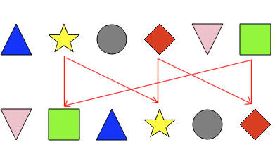
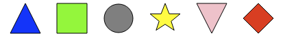
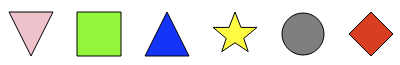

التبدیلات
ساعد القندس في جعل الأشكال الموجودة في "الأشكال الحالیة" مطابقة للأشكال الموجودة في "الأشكال المستهدفة" عن طریق القیام ببعض الاستبدالات.
في كل مرة تحتاج إلى إجراء استبدال، قم باختیار شكلین من الأزرار الرمادیة لیتم استبدالهم.
یمكنك استخدام زر "تراجع" للعودة خطوة واحدة.
إختر شكلین مما یلي أدناه:
الحل
فیما یلي تطبیق التبدیل:
تقوم هذه الاستبدالات بتحویل الرسم خطوة بخطوة كما یلي:


لنبدأ باستبدال المربع بالمثلث المقلوب، ثم الدائرة بالمربع:
تقوم هذه الاستبدالات بتحویل الرسم خطوة بخطوة كما یلي:


في هذه المرحلة، یبقى استبدال النجمة بالمثلث، والمثلث بالنجمة، كما هو موضح أدناه:

لتبادل هذان الشكلان، من الضروري إشراك شكل ثالث، على سبيل المثال المعين. ونقوم بثلاث تبديلات:
تحول هذه الاستبدالات الرسم خطوة بخطوة إلى النتیجة المرجوة:


لنلق نظرة على البدائل التي یجب أن نجریها ابتداء من النجمة الصفراء. یجب استبدال النجمة بمربع أخضر. یجب استبدال المربع الأخضر بالمعين الأحمر. وعلیك استبدال بالمعين الأحمر بالنجمة الصفراء.
لإجراء هذه الاستبدالات، من الضروري تضمین نموذج إضافي، والذي لا یظهر في الرسم الأولي: النجمة الخضراء. یتم إجراء الاستبدالات التالیة:
ثم نحصل على النتیجة المتوسطة الموضحة أدناه:
قارن الآن هذا الرسم بالهدف المرغوب، وهو:
لتحقیق هذا الهدف، استبدل المثلث الأزرق بالمثلث الوردي المقلوب، واستبدل المثلث المقلوب بالدائرة، واستبدل الدائرة بالمثلث الأزرق.
هنا مرة أخرى، من الضروري استخدام نموذج آخر لعمل التبدیلات. یمكنك استخدام النجمة الخضراء، و عمل التبدیلات التاليه :